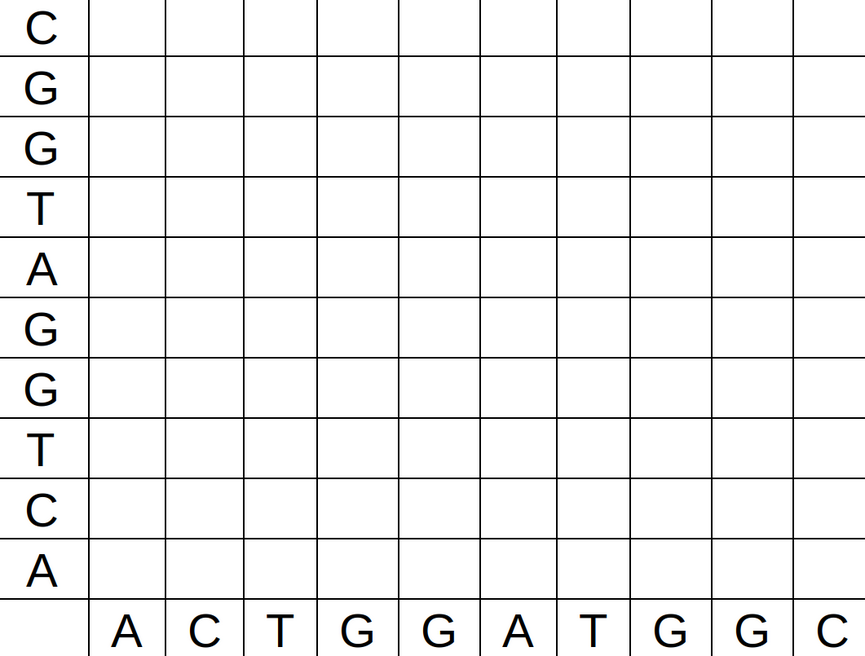

2.2.4 Loading and comparing data
In this control, you are going to do, by yourselves, repeat the analyses we did in the last classes. After most steps, you will have to execute some code, either by pressing enter in the console, or by clicking the Run button in the text area. If you see any errors (text in red), call me.
You have 30 minutes. The information you need to do the exam is in the text, read it attentively. You can look at the pages of the previous lessons if you want. Call me after you succeed each step.
1 Using paper
Ask the teacher for two DNA strands. You will create the dot plot such as the one below, but using your own sequences.

2 Loading the library
In order to use the seqinr library to load and process gene sequence data, run the following command in the console:
library(seqinr)How to know it worked: RStudio will accept your command, and not produce any errors. The line after the command will be just empty.
3 Reading the data
Save the dengue.fasta data to the dengue variable, and the zika.fasta data to the zika variable. Remembering, that in order to save the lalala.fasta data to the lalala variable, one must do:
lalala <- c(read.fasta("lalala")[[1]])How to know it worked: On the top right panel, in the Environment tab, you will see the variables dengue and zika with the description 'SeqFastadna' .... If you type either dengue or zika, you will see the sequence of nucleotides.
4 Calculating GC contents
Calculate the GC content of the dengue and zika sequences, and save them to the dengueGC and zikaGC variables. In order to do this, use the lalalaGC <- GC(lalala) pattern.
When both variables are saved, create a plot with:
barplot(c(dengue=dengueGC,zika=zikaGC))How to know it worked: You should see a bar plot on the bottom-right panel.
Question: Which DNA strand is more heat resistant: zika or dengue?
5 Creating a dot plot 1
Create a dot plot comparing the first 100 nucleotides of the dengue virus to themselves. To select these, you can use dengue[1:100]. The dot plot can be created for a lalala sequence as follows:
dotPlot(lalala,lalala)How to know it worked: You should see a bar plot on the bottom-right panel.
Question: By looking at the image, how do you know this is a dot plot for two equal sequences?
6 Creating a dot plot 2
Create a dot plot comparing the zika and dengue sequences as follows:
dotPlot(dengue[9000:10000], zika[9000:10000], wsize = 5, nmatch = 5, wstep = 5)reminding that the 5 used in the function call means we will only mark with a dot matches with a size of 5 or more.
How to know it worked: You should see a bar plot on the bottom-right panel.
Question: What parts of these subsequences look like each other?
7 Creating a dot plot 3
Coming back to the DNA strands you compared on paper. Save your personal DNA sequences in R:
dna1 <- s2c("actcgctgc")
dna2 <- s2c("cgctgcact")and use dotPlot to build the dot plot. Compare with the one you have on paper.